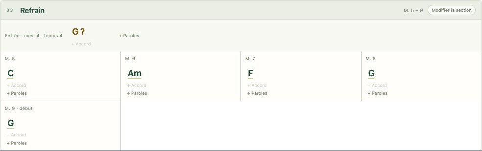

Créer une fiche morceau en PDF.
Choisis les accords, place les mots sur les mesures et exporte la fiche du groupe.
Étape 1 / 8
Ouvrir la fiche
Choisis Fiche morceau dans le menu du morceau ouvert.
- Vérifie le titre, l’artiste, la tonalité et le tempo en haut de la fiche.
- Choisis une section pour resserrer l’affichage. Clique sur une mesure pour y placer la tête de lecture.
- Le prompteur, la fiche et l’éditeur utilisent les annotations du même morceau.
Étape 2 / 8
Lire une entrée avant la mesure
Si le refrain commence avant le prochain « 1 », cherche la ligne Entrée en tête de section.
- Lis le numéro de mesure et le temps indiqués. Dans l’exemple, le refrain démarre au quatrième temps de la mesure 4.
- Le premier accord apparaît sur cette ligne. Les paroles que tu ajoutes suivent aussi leur position dans la mesure.
- Clique sur l’indication Entrée pour placer le curseur au départ du passage et l’écouter.

Étape 3 / 8
Comparer les grilles d’accords
Dans la fiche, Comparer les sources d’accords ouvre l’onglet Accords de l’éditeur.
- Choisis Rechercher une grille Internet si aucune source n’apparaît. Vérifie le titre et l’artiste du morceau.
- Ouvrir la grille permet de consulter la source. Écoute le passage pour choisir la version qui convient à ton enregistrement.
- Clique sur Utiliser cette grille pour l’appliquer. Le choix est conservé pour la fiche et le prompteur.
Étape 4 / 8
Retrouver les paroles sur Internet
Dans la fiche, choisis Corriger les paroles et recaler pour relancer la recherche.
- BandStudio essaie aussi le titre sans les mentions de clip ou de chapitre et s’appuie sur le nom de l’artiste pour distinguer les homonymes.
- Plusieurs sources peuvent être consultées. BandStudio compare la référence au chant local et utilise les repères synchronisés disponibles pour retrouver les répétitions.
- Dans Écoute ciblée, réécoute les mots signalés. Si tu as tes propres paroles horodatées, choisis Importer des paroles et ouvre ton fichier LRC ou SRT.
Étape 5 / 8
Ajuster le placement d’un mot
Clique sur une ligne dans la fiche, ou sur Modifier dans l’éditeur après avoir choisi un passage signalé.
- Écoute l’extrait puis ajuste les positions de début et de fin. Placer au curseur permet de partir de la position entendue.
- Pour préciser un mot, ouvre les réglages mot par mot. Déplacer toute la ligne conserve les positions relatives de ses mots.
- Enregistre et écoute à nouveau. Annuler et Rétablir permettent de revenir sur une correction.
Étape 6 / 8
Choisir les accords à jouer
Dans Éditeur du morceau → Accords, règle le capo et compare les positions proposées.
- Clique sur un accord dans la fiche pour le modifier, ou sur + Accord pour en ajouter un à la mesure.
- Vérifie l’accord d’origine et l’accord à jouer avec ta transposition ou ton capo.
- Réécoute les changements rapides. Les corrections manuelles sont sauvegardées avec le morceau.
Étape 7 / 8
Répéter avec le prompteur
Ouvre Prompteur et lance la lecture pour suivre la section, les paroles et l’accord courant.
- Écoute l’entrée du refrain en suivant les mots. Une ligne sans horaires mot par mot apparaît entière à son départ.
- Pour reprendre un passage, ouvre Éditeur du morceau → Sections et utilise la boucle de la section.
- Dans le prompteur, Modifier dans l’éditeur te ramène aux paroles du morceau.
Étape 8 / 8
Exporter le PDF
Retourne dans Fiche morceau et choisis Exporter la fiche PDF.
- Vérifie les sections, les entrées anticipées et les accords à jouer. Le PDF reprend la grille enregistrée et le capo.
- Choisis le nom et l’emplacement de la copie. Le PDF s’ouvre dans le lecteur du système.
- Tu peux retrouver le document généré dans le dossier Exports du morceau. Avant de publier une fiche contenant des paroles protégées, vérifie les droits de diffusion.